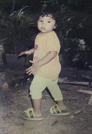
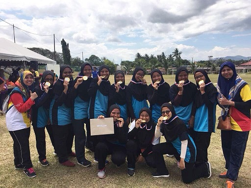
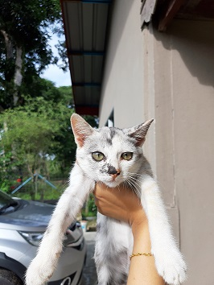

MY BIODATA ❣
Assalamualaikum and have a nice day ahead! As from the introduction's video above, I have make an introduction about myself in a simple way. So, in this page, I will make an explaination with some pictures to support my introduction's video. First of all, my name is Nur Imanina Liyana binti Haini. People usually call me Iman or Imanina while for my family, they call me Liyana. I am 21 years old this year and I was born on 08 June 2001 at Hospital Besar Alor Setar, Kedah. I have 2 siblings which is my brother and I. My brother's age is 27 years old and he already married last year. While for my parents, my father's age is 61 years old and my mother is 56 years old. My father is from Perak while my mother is from Kedah. About my family, I will explain in details at My Family's page.

As you can see above, that was me when I was young. I am a person who are caring, clingy, hardworking, not easily giveup, punctual and if I have started my work, I will strive and push myself to finish it on time. It is because, I don't like to delay my work because it will give a big burden to me. But, for your information, I am also a shy person. It is because, when I met a stranger, I will be quiet and not talk to them but once I have got my courage and be comfortable when started to talk to them, I will be a noisy and funny person. My friends used to said that I am a funny person when making a jokes because the jokes that I made can make anyone laugh even though it is not funny.

Besides, I am actually really love playing handball. It is my favourite sport since I was 8 years old. In the beginning, I don't like handball because actually I was forced to play that sports when I was young. My primary school at Johor when I was 8 years old are a cluster school of academic and handball. So, the students were being forced to play that sports in order to find new talent and person to represent the school when in the upcoming competition. Then, when I was being trained with that sports, eventually it makes me loves handball and I have played for it around 12 years. I have represented my schools since primary schools when I was 10 years old until I was at secondary schools in the age of 17 years old. I also have helping my team in scoring a point when in the competition. It is so much fun if we do the things that we love with sincerely and passion.

Next, I am also a cat lover. I really love cat and I want to keep it but my parents did not allowed me to do that. They said that if I really wanted to take care and keep the cat in our house, I must fully be responsible in taking care of them but I realised that, I cannot be that responsible because I also have my own commitment in studying so I am changing my mind for not keeping the cat as a pet at home and I hope when I got married one day, I can keep at least one cat in my house with my future husband. The picture as stated above was the cat at my father's hometown. I always take a picture of the cat that I found because it can make the memories of meeting them. Furthermore, about my favourite food and drink, I really loves Nasi Pattaya and Iced Milk Tea. I am a fans of Iced Milk Tea so much and if I go to the restaurant or any food stall, I will definitely order Iced Milk Tea. Actually, it is not good for health but I don't care actually. For my hobby, I really loves to listen to the music especially in English song and I loves to sing a song. When I was young, my ambition is I want to be a teacher but as I am failed to apply the IPG after SPM because my result of SPM did not fulfill the requirement, so the ambition have gone and I already have a new ambition which is I want to be a cataloguer. So, I think that's all about me, thank you so much for your time in visiting this page :)